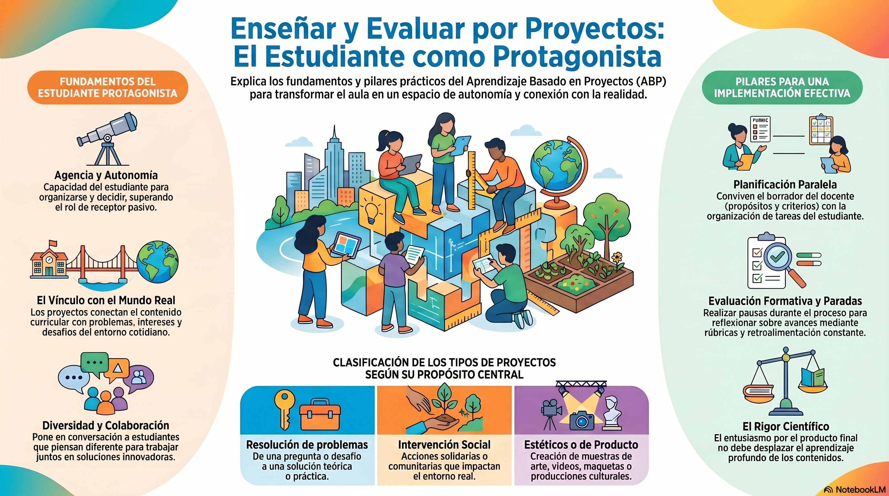

El Mundial y la Matemática: entrega del documento de trabajo
En la clase de hoy vamos a organizar la entrega del documento grupal de la actividad "El Mundial y la Matemática". El objetivo es dejar compartida la propuesta completa: fundamentación, plan analógico y actividad digital en GeoGebra.
Recordatorio importante
Quienes todavía no entregaron la autoevaluación deben hacerlo a la brevedad.
Esta entrega forma parte del cierre del recorrido sobre el Proyecto de Filiación.
Comenzaremos recuperando ideas de Rebeca Anijovich
Antes de avanzar con la entrega del documento, retomaremos algunos aportes de la conferencia sobre enseñar y evaluar a través de proyectos.

Miren con atención la infografía hecha con NotebookLM y contrasten la imagen con los conceptos de Rebeca.
¿Acuerdan con todo lo que aparece en la infografía o hay algo que les parece que no corresponde? Sabemos que la IA a veces alucina, o que no siempre representa bien la información dada. ¿Qué ven en este caso?
Iniciamos el debate.
Ver resumen del video
El video de Rebeca Anijovich ofrece una mirada profunda y práctica sobre cómo entender e implementar el Aprendizaje Basado en Proyectos (ABP), destacando que no se trata solo de una metodología, sino de un enfoque que cambia los roles tradicionales en el aula.
1. Fundamentación: el estudiante como protagonista
Anijovich retoma las ideas de Philippe Perrenoud para aclarar que un proyecto no consiste en hacer "ejercicios escolares rutinarios", sino en enfrentar verdaderos problemas que movilizan competencias. Apoyándose en Jerome Bruner, subraya la importancia de desarrollar la agencia y la autonomía. En el ABP, el estudiante es protagonista de su aprendizaje y evaluación, capaz de colaborar y aplicar soluciones innovadoras en el mundo real.
2. ¿Cómo nace un proyecto?
El punto de partida puede surgir de los intereses y preguntas de los estudiantes, de un acontecimiento social o de una pregunta provocadora introducida por el docente y la institución.
3. Principios para diseñar e implementar proyectos
- Referencia curricular: el docente debe articular el proyecto con los contenidos del Diseño Curricular.
- Conocer a los estudiantes: es importante saber qué temas, redes, series o preocupaciones forman parte de su mundo.
- El desafío o pregunta central: no debe responderse fácilmente buscando en internet; debe provocar pensamiento, discusión y toma de decisiones.
- Doble planificación: conviven la planificación docente y la planificación de los estudiantes.
- Comunicación hacia el exterior: definir a quién se comunicarán los logros tiene un fuerte impacto motivacional.
- Evaluación de dos dimensiones: se evalúa la pertinencia del proyecto y los aprendizajes construidos durante el proceso.
4. Evaluación formativa y metacognición
La evaluación no puede quedar solo para el final. Es necesario realizar paradas durante el proceso para ofrecer retroalimentación con rúbricas, listas de cotejo o protocolos. Anijovich destaca la escalera de la metacognición para pensar qué se necesita al iniciar, cómo se avanza y qué se aprendió al finalizar.
5. Desafíos comunes y orientaciones
- Rigor académico: cuidar que el entusiasmo por el producto final no haga perder de vista el contenido disciplinar.
- Autonomía inicial: si el grupo tiene poca autonomía, ofrecer opciones acotadas para aprender a decidir progresivamente.
- Pérdida de interés: indagar la causa y buscar estrategias para reponer el sentido del proyecto, por ejemplo contactando a un experto real.
A modo de cierre, Anijovich afirma que el corazón del diseño está en construir un buen problema o pregunta inicial. La escuela debe dejar de ser una caja cerrada y buscar mayor permeabilidad con los problemas y personas del mundo exterior.
Actividad de la clase
Para la clase del día de hoy, un integrante de cada grupo deberá compartir en el foro Actividad: "El Mundial y la Matemática", del aula del INFoD, el enlace a su Documento de Google Drive.
Recuerden configurar el documento para que pueda ser visualizado por quienes tengan el enlace.
Estructura requerida para el documento
Datos generales y breve fundamentación teórica
- Encabezado: nombre de los integrantes y curso de la Escuela Secundaria asignado.
- Nombre de la actividad.
- Contenido curricular: eje temático y saberes específicos extraídos de forma explícita del Diseño Curricular vigente en la provincia.
- Reflexión pedagógica: breve fundamentación que vincule la propuesta con la conferencia de Rebeca Anijovich.
En la reflexión deben explicar:
- Cómo van a evitar plantear "ejercicios escolares rutinarios", citando a Perrenoud, que pueden leer en la bibliografía de la materia.
- De qué manera la temática del Mundial se convertirá en un problema o desafío auténtico, donde el alumno de secundaria deba actuar y movilizar saberes de forma activa.
- Otro concepto o idea del video de Anijovich que puedan aplicar en su actividad.
La propuesta analógica: el "Plan B" en papel y lápiz
- La consigna de aula: redacten la actividad tal cual se la entregarán a los alumnos si en la escuela secundaria no hubiese conexión a internet o computadoras.
- Materiales físicos: detallen qué soportes utilizarán, por ejemplo hojas milimetradas, fotos impresas de jugadas o estadios, hilos para registrar trayectorias, reglas o transportadores.
- Resolución completa: desarrollen paso a paso todos los cálculos, estimaciones, fórmulas y representaciones matemáticas esperadas como solución para esta modalidad analógica.
La actividad digital en GeoGebra
- La consigna digital: redacten la consigna adaptada al software. Indiquen qué acciones nuevas se le piden al estudiante aprovechando la tecnología.
- Enlace de acceso: coloquen el link de la actividad en GeoGebra.
- Objetivo final: recuerden que todas las producciones se integrarán luego en un Libro de GeoGebra del curso.
Antes de publicar en el foro
- Revisen que el documento tenga los tres bloques completos.
- Verifiquen que el enlace de Google Drive tenga permisos de visualización.
- Comprueben que el enlace de GeoGebra abra correctamente.
- Publiquen el enlace en el foro del INFoD una sola vez por grupo.